THE MINDRESET ARCHITECT SYSTEM™
A framework for turning learning, research, and problem-solving into compounding businesses
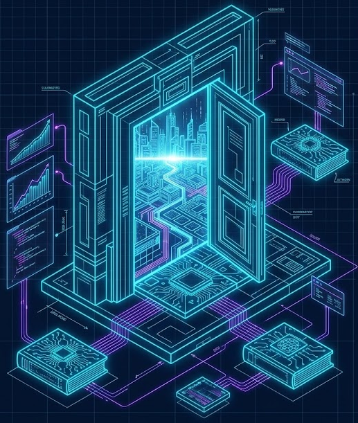
BLUEPRINT 01: THE CORE PHILOSOPHY
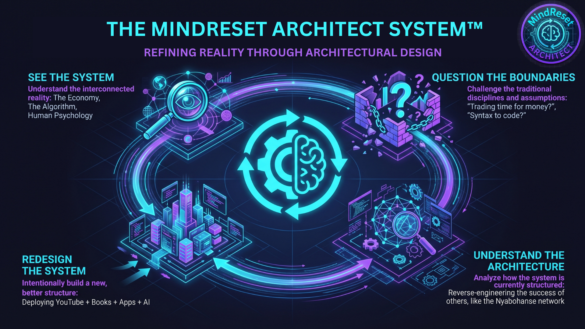
Everything exists in systems. Everything we build is architecture.
Reality is a web of interconnected systems. From the global economy to the biological mind, and even the ecosystem of a forest, these networks follow natural, predictable behaviors. However, when human intelligence intervenes to design, arrange, or rebuild those systems, architecture emerges.
The fundamental problem is that most of us live blindly inside systems we didn't design. We follow legacy rules and respect boundaries we didn't set, moving passively through a world built by someone else's intelligence.
Consider the 40-hour work week. To most people, it feels like an immutable law of nature. In reality, it is a specific structural design from the industrial age—a system you were simply born into. Remaining a passive component in that default structure ensures that your financial and personal growth is permanently dictated by its limits.
Escaping those limits requires a fundamental shift in identity. You must stop thinking like a passive component and start adopting an architect's mindset to redesign the machine from the ground up.
This framework is built on a single, empowering mandate:
BLUEPRINT 02: THE TRIAD (YOUTUBE + BOOKS + APPS)
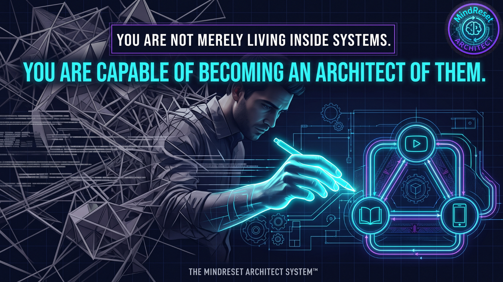
The Architecture of a Self-Sustaining Ecosystem
To escape the linear labor trap, you must build an asymmetric revenue system. In this architecture, you build an asset once, and it operates independently, generating value around the clock without your physical presence.
However, if you build a single digital asset—like a YouTube channel or a single piece of software—and treat it as an isolated hobby, the system will eventually stall. Sustainable, scalable leverage requires an ecosystem where the assets are engineered to feed one another.
We achieve this through The Triad Architecture: three digital nodes that interlock to form a self-sustaining business engine.
- Node 1: YouTube (The Distribution Layer) — This is not about vlogging; it is about intentional documentation. YouTube serves as the top-of-funnel distribution network. You process your daily research, building, and routines into a library of videos. Each video acts as an automated employee, pitching your ideas to a global audience 24 hours a day, generating traffic and raw data.
- Node 2: Books (The Authority & IP Layer) — Books function as the structural shield of your ecosystem. By codifying your research into owned intellectual property, you establish absolute authority in your niche. More importantly, a book is an asset you own completely, protecting your business from sudden algorithm changes or platform risks associated with rented networks like YouTube.
- Node 3: Apps (The Leverage & Monetization Layer) — Apps provide the ultimate monetization and leverage layer. Here, software is deployed to solve specific, high-leverage problems for your audience at scale. This is where the ecosystem locks together: you identify a problem, build an application to solve it, document the process on YouTube, and formalize the frameworks in a book.
When engineered correctly, the momentum flows logically: YouTube videos capture attention, directing viewers to the deep-dive systems in your books. Those books reveal specific audience needs, dictating the development of software applications. Those apps then produce raw data and case studies for your next round of videos.
BLUEPRINT 03: THE CONTINUOUS GROWTH ENGINE™
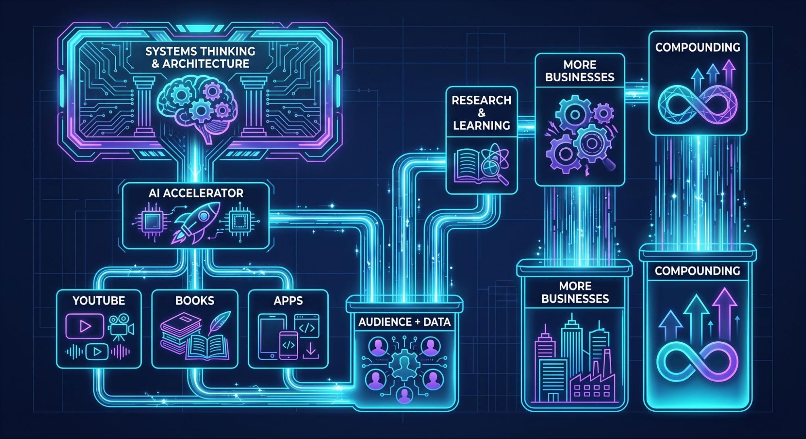
The Operational Loop of an Architect
A system is only as powerful as the engine driving it. If your daily routine consists of random inputs and disconnected outputs, your growth will be fragmented. To build compounding digital assets, you need a closed-loop operational framework.
At MindReset Architect, we execute a precise protocol known as The Continuous Growth Engine™. It is a structured sequence that turns raw curiosity into proprietary intellectual property.
The output of one cycle becomes the high-octane fuel for the next. This is how a single YouTube channel evolves into a library of books, which evolves into a suite of applications. It scales by its own internal logic, creating an empire built entirely in the lab.
BLUEPRINT 04: THE COMPOUNDING EFFECT
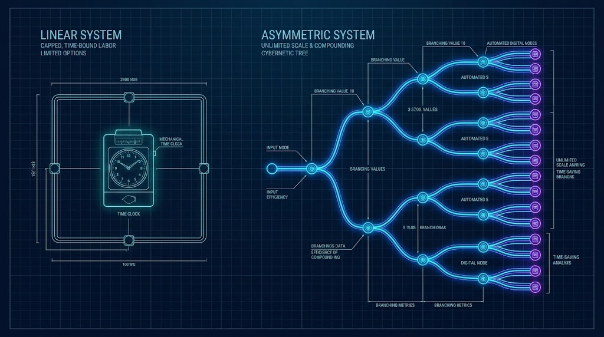
Engineering Asymmetric Revenue Systems
Engineers classify traditional employment as a linear system. It relies on a strict, one-to-one exchange: you input one hour of your time, and the system outputs one unit of money.
The fatal flaw of a linear system is its hard ceiling. Your output is strictly capped by physical stamina and the immutable limit of a 24-hour day. Attempting to generate more wealth by simply working harder within this model is like trying to fix a structural defect with brute force—you aren't changing the result, you are just accelerating the wear on the engine.
Scalable freedom requires an entirely different machine: The Asymmetric Revenue System.
In an asymmetric architecture, the rewards no longer correlate to your hourly input. You build an asset once, and it operates independently, generating value around the clock without your physical presence. This applies to all three nodes of our Triad:
- A YouTube video uploaded once will pitch your ideas to a global audience 24 hours a day.
- A written book will distribute your codified IP globally while you sleep.
- A software application will solve high-level problems for thousands of users simultaneously.
When these three asymmetric assets are interlocked and engineered to feed one another, you achieve true leverage. This mirrors the mechanics of compound interest—the force Albert Einstein identified as the mathematical driver of exponential, self-reinforcing growth. In the MindReset Architect framework, your digital assets compound. The YouTube channel drives traffic to the book. The book establishes the authority needed to launch the app. The app generates the user data needed to create the next YouTube video.
The ultimate goal is not a higher hourly wage. The ultimate goal is an ecosystem that perpetually improves itself, functioning entirely independently of your own physical presence.
BLUEPRINT 05: YOUTUBE AS DISTRIBUTION
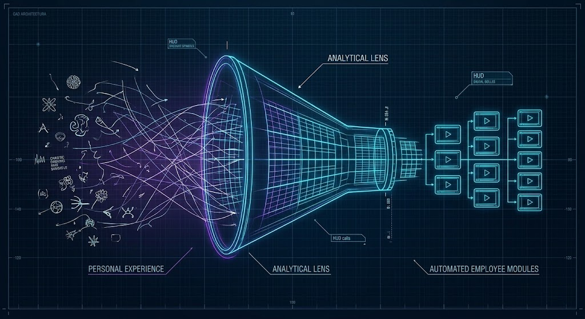
Intentional Documentation vs. Vlogging
To the average user, YouTube is an entertainment platform for casual vlogging. To an Architect, YouTube is a massive search engine and the ultimate top-of-funnel distribution network.
The strategy here is not to randomly record your life, but to execute intentional documentation. You process your daily research, systems building, and routines into a library of videos. By filtering your raw, everyday experiences through an analytical lens, you create highly structured educational content.
Once uploaded, each properly researched video becomes a permanent digital asset in your asymmetrical system. It functions as an automated employee, pitching your ideas to a global audience 24 hours a day, 365 days a year. If you have 5, 50, or 500 great videos performing on the platform, you have built an entire fleet of automated employees working for you constantly. They do not sleep, they do not require a salary, and they do not stop producing even if you are sick or unavailable.
However, an Architect also understands the risks of a rented platform. You do not control YouTube's algorithm, and relying solely on its ad revenue creates a systemic vulnerability.
Therefore, YouTube is never the end game; it is the launchpad.
BLUEPRINT 06: BOOKS AS AUTHORITY
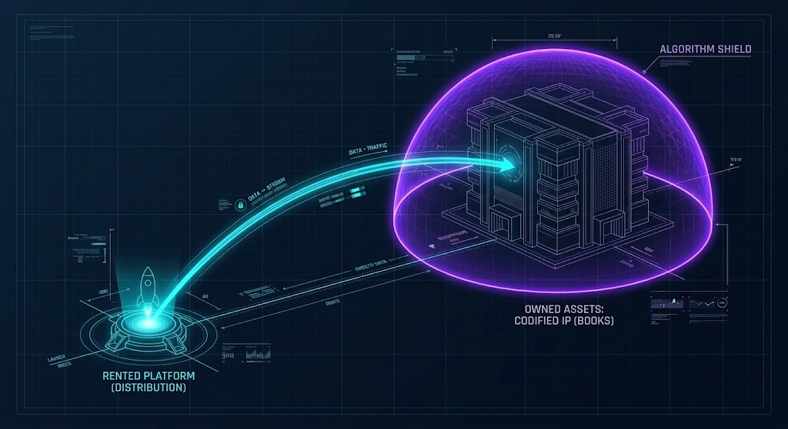
Codifying IP and Building Algorithm Immunity
YouTube is an unparalleled distribution engine, but an Architect understands the fundamental difference between rented distribution and owned assets.
YouTube is a rented platform. You do not own the algorithm, and relying exclusively on its traffic creates a systemic vulnerability. If you build your entire empire on rented land, a single algorithmic shift can collapse your revenue.
To engineer true stability, you must deploy the second node of the Triad: Books as Authority.
Books function as the authority node of your ecosystem. By formally structuring your daily research and video modules into written volumes, you codify your intellectual property (IP). This creates a structural shield that protects your business from the sudden algorithm changes of rented platforms.
Creating this asset does not require you to step away from your Continuous Growth Engine; it is the natural byproduct of it. You research a subject deeply, test your frameworks publicly via YouTube, and then organize that validated knowledge into a book. As you teach what you are learning, you are forced to understand the architecture of the idea, transforming you from a researcher into an absolute authority.
In this system, YouTube acts as the launchpad. It captures global attention and funnels that traffic directly into your owned, algorithm-shielded digital assets. A video generates temporary traffic, but a codified book generates deep, permanent trust.
BLUEPRINT 07: APPS AS PRODUCTS
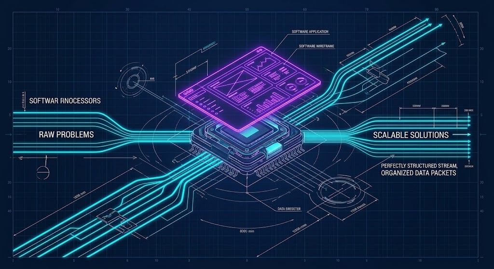
Engineering High-Leverage Solutions at Scale
YouTube captures global attention, and Books establish your unshakeable authority. But the ultimate engine of wealth creation—the true peak of the Asymmetric Revenue System—is software.
Apps provide the monetization layer. Here, software is deployed to solve specific, high-level problems for your audience at scale. Software is the purest form of leverage because its marginal cost of replication is effectively zero. You build the architecture once, and it can serve ten users or ten million users simultaneously without requiring a single extra second of your physical time.
This is where the entire MindReset Architect ecosystem locks together into a closed, compounding loop.
As you learn and research, you identify systemic friction points. You do not just complain about these problems; you engineer applications to solve them. You build an application that solves the problem, you write a book about what you learned, and you document the process on YouTube.
The application solves the problem. The book deepens the ideas. The YouTube channel attracts the audience. Every single node in this system feeds the others, creating an inescapable orbit of value.
In the past, this third node was the great barrier. Traditionally, building software required a decade of specialized training in computer science, leaving this level of wealth generation exclusively to traditional coders and Silicon Valley engineers.
But the paradigm has shifted. The barrier has been destroyed.
BLUEPRINT 08: THE AI ACCELERATOR
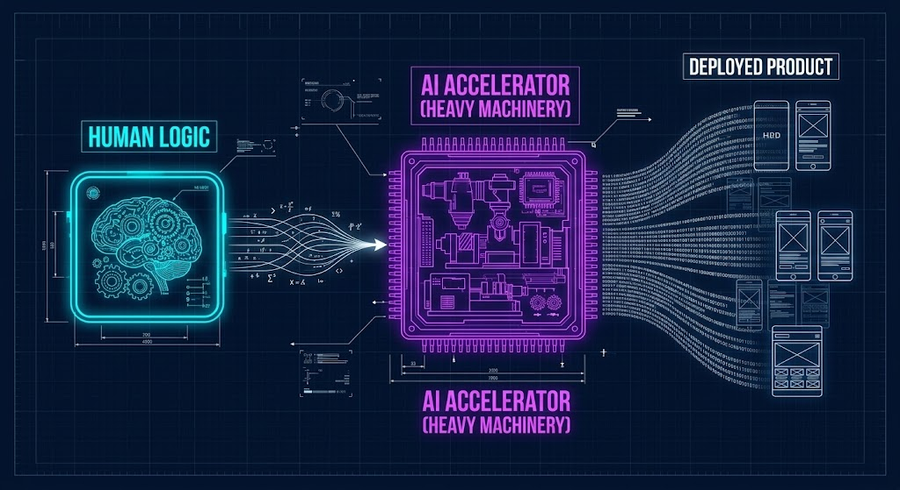
Vibe Coding and the End of the Traditional Barrier
Historically, the third node of our Triad (Apps) was the ultimate bottleneck. Traditionally, building scalable software required a decade of specialized training in computer science, leaving the highest levels of wealth generation exclusively to traditional coders and Silicon Valley engineers.
But the paradigm has shifted. AI has entered the equation, and it is the ultimate accelerator.
Artificial Intelligence has fundamentally collapsed the barrier between an idea in your head and a deployed, working product. We have officially entered the era of "vibe coding" and AI-assisted development.
You no longer need to spend years memorizing complex coding syntax before you can build complex systems. Large language models now possess the ability to translate human logic directly into functional, deployable code. Today, AI can write the code, explain the backend architectures, debug the logic, and prototype the user interfaces.
Because of this, the division of labor has permanently changed.
If the human can architect the logic and identify the systemic problems, the AI provides the heavy machinery required to write the executable code. You do not have to wait until you know everything to begin. The Architect's workflow is now frictionless: You start with a problem. You run into a friction point. You learn the overarching concept. You use AI to bridge the technical gap. You deploy the next version.
This is the ultimate multiplier. It allows a single individual, armed with an internet connection and an AI assistant, to design, deploy, and manage digital systems that previously required entire corporate engineering departments.
BLUEPRINT 09: THE DISCOVERY LOOP
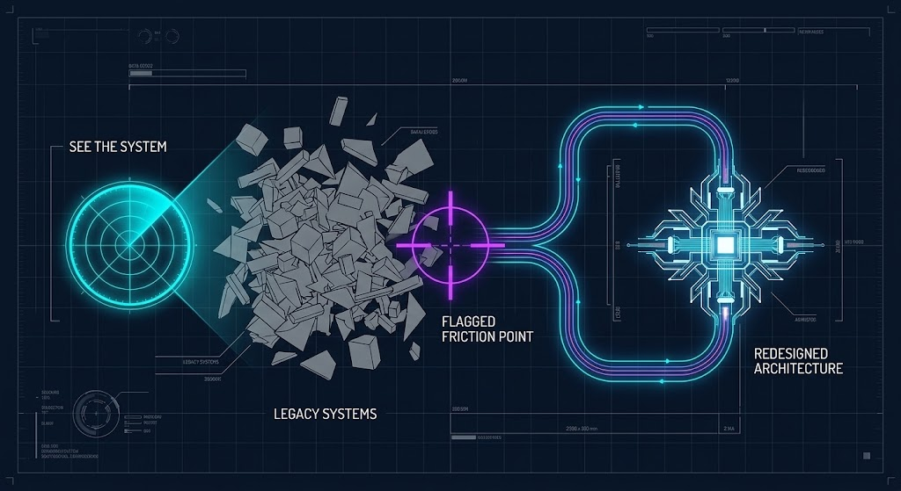
How to Spot Legacy Systems and Engineer Solutions
To feed your Continuous Growth Engine and deploy high-leverage products, you need a constant supply of raw material. That raw material is friction.
The fundamental problem is that most of us live blindly inside systems we didn't design. We follow legacy rules and respect boundaries we didn't set, passively accepting inefficiencies as immutable laws of nature.
An Architect does not complain about friction; an Architect flags it. A problem is simply a blueprint waiting to be drawn. To constantly identify these high-value problems in the real world, you must execute The Discovery Loop: a four-step framework for spotting legacy systems and intentionally redesigning them.
This loop guarantees that your ecosystem will never stall. As long as you are actively running The Discovery Loop, you will have an infinite supply of real-world problems to solve, document, and monetize.
BLUEPRINT 10: THE ARCHITECT'S WEEKLY OS
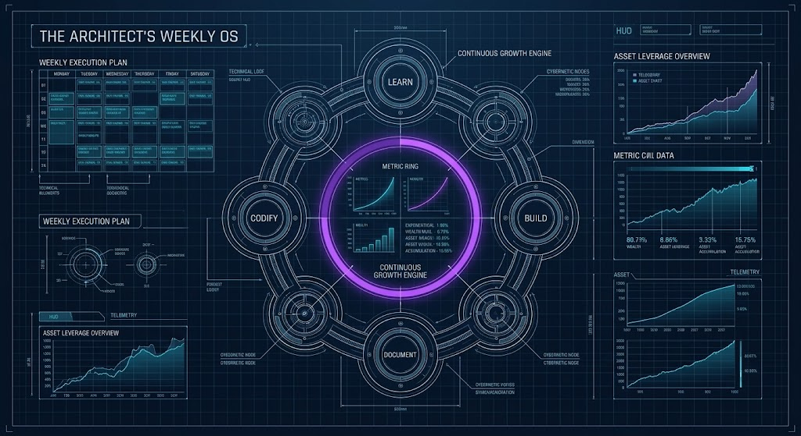
Executing the Continuous Growth Engine
You now understand the architecture of the Triad, the compounding effect of asymmetric assets, and the power of the AI Accelerator. But a system is only as powerful as the execution driving it.
An Architect does not rely on fleeting motivation; they rely on a structured operating system (OS).
The tools once reserved for the few are now available to the many, meaning the only variable left is individual execution. To escape the linear labor trap, you must build your days around a specific operational loop: you learn, research, build, document, and teach.
Here is the weekly execution blueprint:
By running this OS weekly, the output of one system becomes high-octane fuel for the next, creating an engine that scales by its own internal logic.
Remember: Stop trading your finite time for a capped reward and start building digital assets. In this framework, money is simply the telemetry data that proves your engineered system is providing value at scale.
YOUR BLUEPRINT IS DRAWN. IT IS TIME TO BUILD.
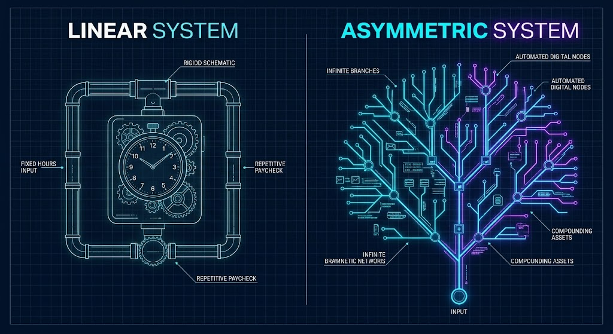
Your Blueprint is Drawn. It is Time to Build.
You now possess the foundational blueprint of the MindReset Architect methodology. You understand the trap of the linear system, the compounding power of the Triad, and the limitless potential of the AI Accelerator.
But a blueprint is merely potential until an Architect decides to execute.
You can close this document and return to the default, legacy system you were born into—trading your finite time for a capped paycheck while others build compounding wealth. Or, you can refuse to punch below your weight, step into the lab, and start engineering your own asymmetric revenue engine.
If you are ready to build, your next steps are here.